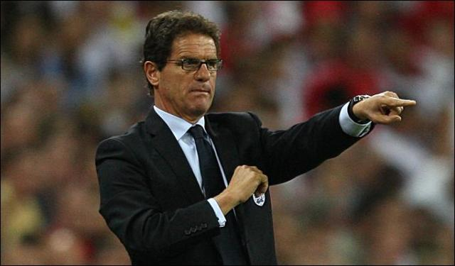
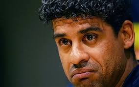
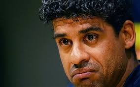

A lo largo de toda la temporada de 1991/92 y durante toda su carrera en el Milan, el entrenador friulano fue reconocido por sus dotes de gran motivador y por el de desarrollar un estricto trabajo con sus pupilos. Enfocándose en la obtención del campeonato de liga (el duodécimo de la Sociedad), Capello y el equipo lograrían su cometido en un campeonato récord, que les valió el apodo de Gli Invincibili (los invencibles).21 Con el registro de 56 puntos y sin conocer la derrota en aquel campeonato, el Milán se transformó en el segundo equipo italiano en terminar de manera invicta el campeonato (junto al Perugia de 1979) y el primero en ganarlo, manteniendo la imbatibilidad durante todo el proceso.
"La Directiva con Capello logró obtenr un titulo de Champions League"
Aquel conjunto obtuvo un total de 74 tantos (una media de 2 por partido), concretando algunos memorables partidos para el club, como el 5:0 al Napoli, el 5:1 a laSampdoria (defensora del título) o el 2:1 al Rangers FC (el mejor equipo del planeta en aquella época). En el contexto individual, el Milan destacó al adjudicarse Van Basten (por segunda ocasión en su carrera) el título de capocannoniere con 25 goles.
Después de la obtención del scudetto récord, el Milan posaba sus ojos en Europa, pero sin dejar de lado otro suceso a nivel local. Durante la campana de 1992/93, la sociedad adquirió, para el mercado estival, jugadores de calibre como el internacional francés Jean-Pierre Papin (Balón de Oro en 1991), el croata Zvonimir Boban, el serbio Dejan Savićević, y los italianos Stefano Eranio y Gianluigi Lentini. La temporada prosiguió la marcha triunfal del Milán de Capello al conquistar la segunda Supercopa de Italia, después de vencer al Rangers FC por 1:0, en un partido que comenzó con Van Basten concretando el primer desequilibrio y con Daniele Massaro finiquitando el duelo (a 20 minutos del término), luego del transitorio 0:0. En el campeonato de liga, el Milán logró extender a 58 los partidos sin conocer derrotas en la Serie A, toda una marca a nivel local y uno de los invictos más prolongadas en el plano internacional. Repitiendo el sólido camino (con emocionantes partidos como el 7:3 a la Fiorentina o el 5:4 al Pescara) del torneo precedente, el Milán mantuvo el liderazgo y el control del campeonato desde la primera jornada, culminando con el bicampeonato y la obtención del decimotercer scudetto. Lamentablemente para el club y después de trece jornadas, la plantilla perdió a Van Basten a causa de sus persistentes problemas físicos. Operado en Bélgica, el cigno di Utrecht se reencontraría con el grupo después de cinco meses de recuperación.
En el campo continental de la Copa de Campeones (renombrada esa temporada como Liga de Campeones de la UEFA), Il Diavolo se confirmaba como una muy sólida escuadra al vencer sus diez partidos disputados, marcar 23 tantos y ver vencida su valla en tan sólo una ocasión. El equipo finalizó primero de su grupo (teniendo de rivales al Goteborg, al PSV y al Porto) y accedió a disputar su sexta final, en un partido jugado en el Olympiastadionde Múnich ante el Olympique de Marsella. Contra todos los pronósticos, el equipo cayó por la cuenta mínima ante el cuadro francés. Aquel partido significó la última aparición en un campo de juego del gran Marco van Basten.
Fabio Capello, autor intelectual de uno de los ciclos más exitosos en la historia del Milan.
En la temporada de 1993/94, el Milán cambió nombres, como el del trío neerlandés (al ser Gullit y Rijkaard traspasados y Van Basten estar cerca del retiro por una serie de infortunios), Alberigo Evani (después de trece anos con el club, fue cedido a la Sampdoria) y Gianluigi Lentini (víctima de un grave accidente automovilístico, quedó fuera del equipo por el resto de la campana). Durante el mercado de fichajes, la plantilla acopló a jugadores como Brian Laudrup, Florin Răducioiu, Christian Panucci y (a mitad de la temporada) Marcel Desailly. Marco Simone se convirtió en un titular indiscutible y determinante en los resultados junto a Jean-Pierre Papin. En el inicio de la temporada, el Milán se adjudicó un nuevo trofeo al revalidar la Supercopa de Italia, después de vencer (en una final jugada en Washington, Estados Unidos) al Torino, con un único gol de Marco Simone a los cuatro minutos del primer tiempo.
Liderando el campeonato local, el equipo disputó la Copa Intercontinetal, el 12 de diciembre de 1993, en reemplazo del Olympique de Marseille, a raíz de los casos de corrupción ocurridos en el seno del club francés. Aquella final, jugada contra el Sao Paulo de Brasil, lo vio dos veces en desventaja, pero logrando igualar las acciones (Massaro al minuto 48' y Papin al 81'), aunque finalmente y a cuatro minutos del término, el equipo acabó cayendo por 2:3, en una disputada final. Para enero y febrero del ano siguiente, el equipo participó (también por el caso de corrupción del Olympique de Marsella) en la Supercopa de Europa, la cual perdió ante el Parma, después de ganar por 1:0 en la ida (gol de Papin) y de caer por 0:2 en San Siro (con un gol en el quinto minuto del tiempo suplementario). En el campo local, el Milan lograría establecer un dominio en la Serie A, al conseguir el decimocuarto scudetto de la sociedad y el tercero de manera consecutiva (a dos jornadas del término del campeonato). Aquel torneo trajo números récord como la imbatibilidad del portero Sebastiano Rossi (929 minutos sin recibir un gol en la Serie A) y la cifra de goles en contra (15 en 34 jornadas). El prolífico ano se cerraría en el plano europeo, al arribar invicto, a la tercera final de manera consecutiva de la Liga de Campeones (la séptima en la historia de Il Diavolo). El partido disputado en Atenas, el 18 de mayo de 1994, lo midió ante el Barcelona (el denominado Dream Team deJohann Cruyff). Sin ser considerado como favorito, el Milan jugó la que puede considerarse como la mejor final disputada por la sociedad en la Liga de Campeones. Con unadoppietta de Massaro, un extraordinario gol de Savićević y la lápida de Desailly, los rossoneri lograron imponerse por un categórico 4:0. Así consiguieron llevar a Italia, la quintaorejona del club y el duodécimo trofeo a nivel internacional.
La era Capello continuaba en la senda del éxito al iniciar la temporada de 1994/95 con la obtención, en agosto, de la Supercopa de Italia (la cuarta del club y la tercera de manera consecutiva), en un partido disputado en el San Siro, donde el Milán se impuso a la Sampdoria por 4:3 en penales, después de empatar 1:1 en el tiempo regular y suplementario (con un gol de Gullit que igualaba el marcador a siete minutos del término de los noventa minutos). En un campeonato algo irregular, el equipo finalizó en la cuarta ubicación, pero no sin antes disputar la Copa Intercontinental 1994, la cual perdió por 2:0 ante el Club Atlético Vélez Sarsfield de Argentina y conquistar, en febrero del ano siguiente, la tercera Supercopa de Europa de la sociedad y el décimo tercer torneo a nivel internacional. Aquel trofeo lo obtuvo ante el Arsenal, al que, después de empatar sin goles en Inglaterra, se venció por 2:0 en Milán, tras sendos goles de de Boban y Massaro (al minuto 41' y 67', respectivamente). En la Liga de Campeones, el equipo tuvo un duro escollo (en la fase de grupos) ante el Ajax, perdiendo ambos partidos ante el cuadro neerlandés. Los dirigidos por Capello, lograron imponerse a los demás rivales, pero teniendo que disputar sus dos últimos partidos de local en el grupo, en un campo neutro de la ciudad de Trieste, tras un incidente en la victoria del equipo por 3:0 ante el Austria Salzburgo, en San Siro. Al Milán se le penalizó con dos puntos, por lo que se clasificó gracias a la diferencia de goles (después de totalizar cinco unidades). En cuartos de final se midió al Benfica, al cual eliminó por un global de 2:0 (2:0 en Milán e igualdad sin goles en Lisboa), accediendo a semifinales donde logró dejar en el camino al Paris Saint-Germain, tras lograr ganar por 0:3 en la ida y finiquitar en el San Siro tras empatar 0:0. De esta manera, el Milan accedió a disputar su quinta final en siete anos y la tercera de manera consecutiva. El partido decisivo tuvo lugar en Viena, el 24 de mayo de 1995 y ante el Ajax, donde, en una muy disputada final, el equipo cayó tras un único gol de Patrick Kluivert, a dos minutos del término del tiempo regular.

"Capello con los jugadores que tenia eran invencibles"
La temporada de 1995/96, la última del ciclo de Capello y del decennio d'oro del Milan, dio inicio con la llegada de Il Codino Roberto Baggio (Balón de Oro en 1993) y del atacante liberiano, George Weah (proveniente del Paris Saint-Germain). Bajo la guía de Big George (autor de once goles), Baggio y Marco Simone, el Milán logró establecerse en la punta con una cómoda ventaja de ocho puntos sobre la Juventus, en un campeonato plenamente dominado por la squadra rossonera, conquistando así, el decimoquinto título de liga de la sociedad. En la Copa UEFA y después de un sólido camino, el equipo cayó en cuartos de final por 0:3 ante el Girondins de Bordeaux (en Francia), después de haber ganado por 2:0 en el partido de ida disputado en el San Siro.

.jpg)


 
